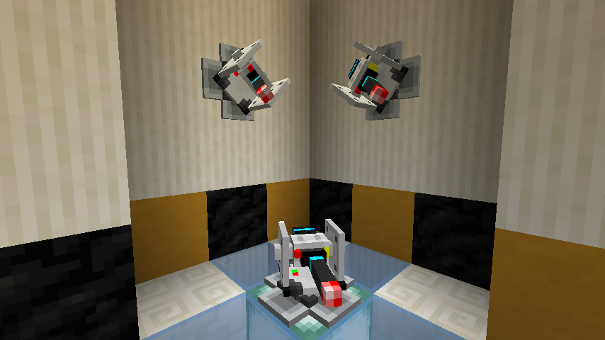
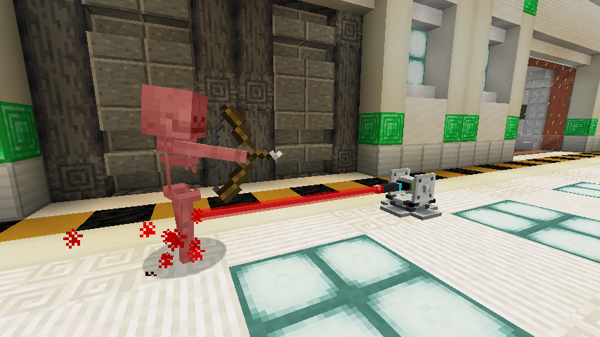
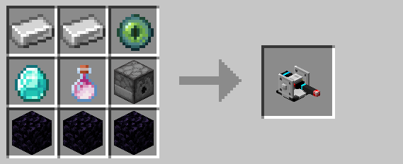

Defense Turret

The defense turret blasts hostile mobs and, optionally, players with a laser. By default, turrets only target hostile mobs within its firing range, prioritizing the closer ones. However, it can be given a code to attack players as well.

With eighteen health points and eight damage per hit, turrets are a stronger but immobile alternative to drones. Like drones, turrets slowly regenerate health over time.
Encoding
Turrets can optionally be given a code using the encoder. Turrets given a code will attack other drones, turrets, and players with a non-matching code. A player's "code" is simply that of their last held keycard. Once approved, an entity will not be targeted again until their approval expires, even if they hold a non-matching keycard.
Crafting

History
| Version | Changes |
|---|---|
| R1 | • Added turrets |
| R2 | • Buffed firing range • Lowered reload time • Made recipe less expensive |
| R3 | • Can now be placed on all sides of a block • Can now visually rotate around two axes • Added new sounds and a dedicated laser model • Reduced recipe cost to be more in line with drones |